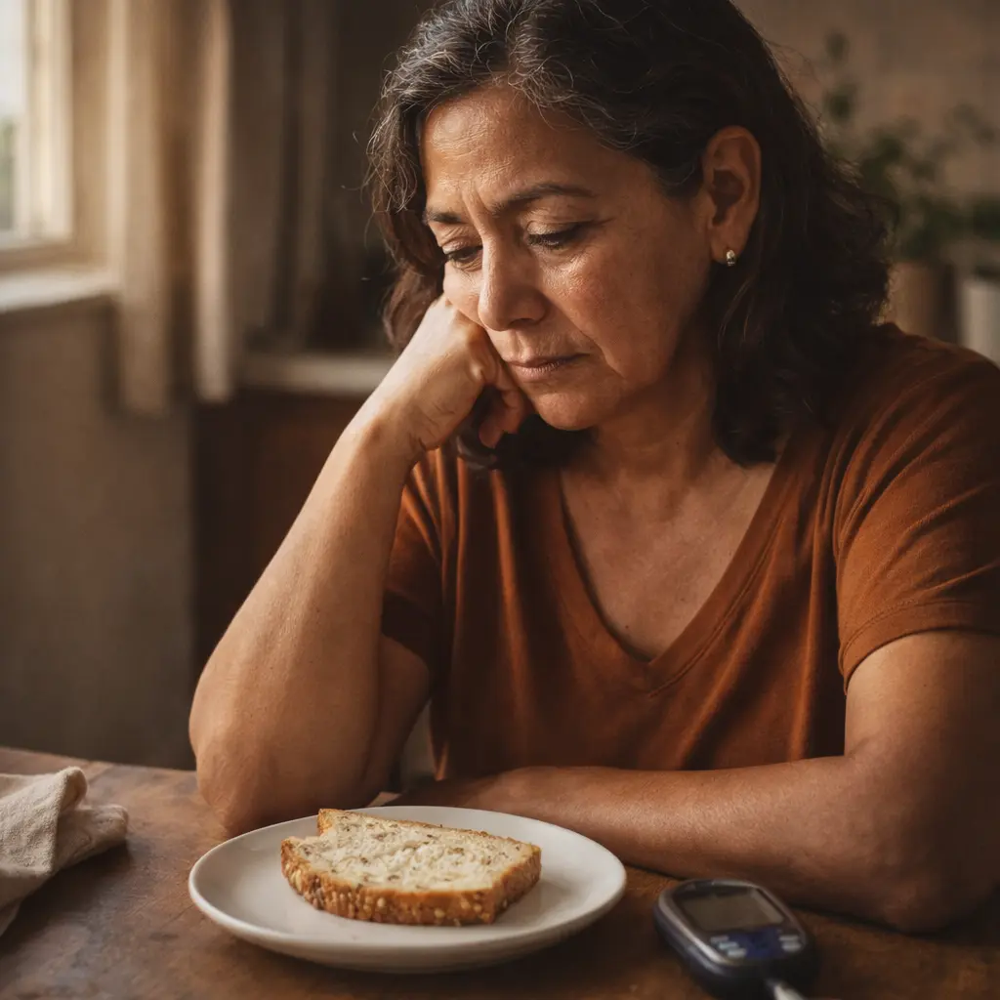
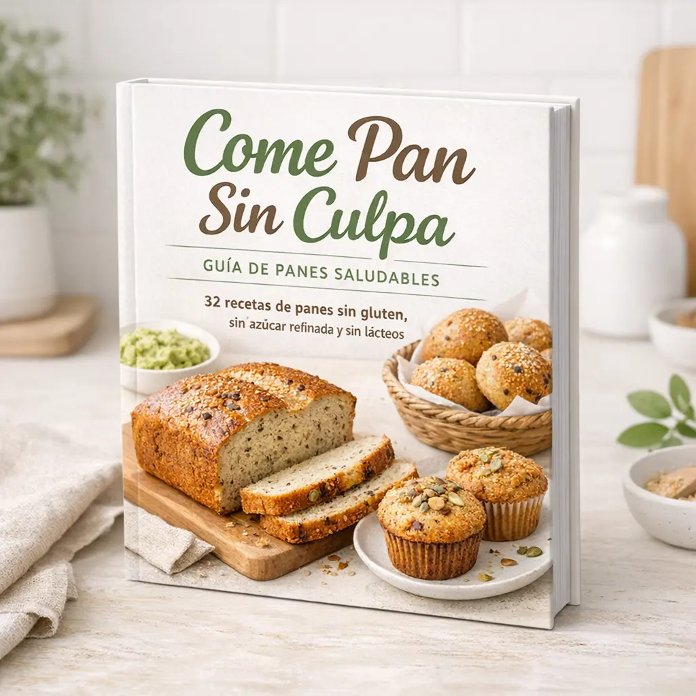
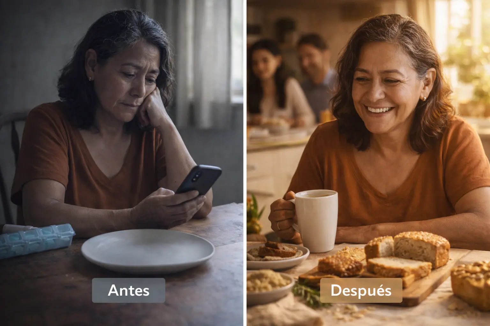
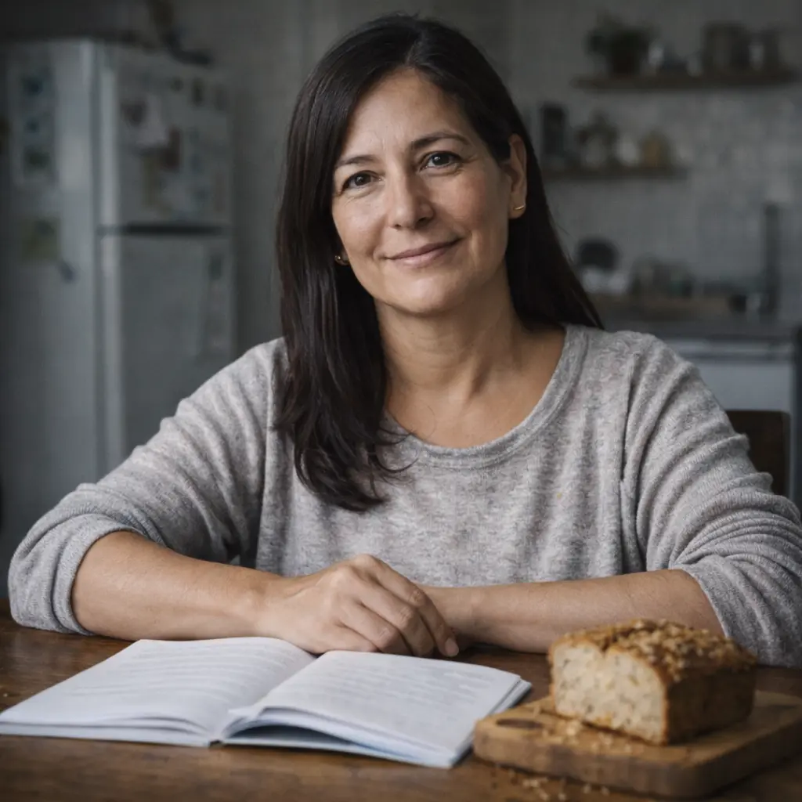
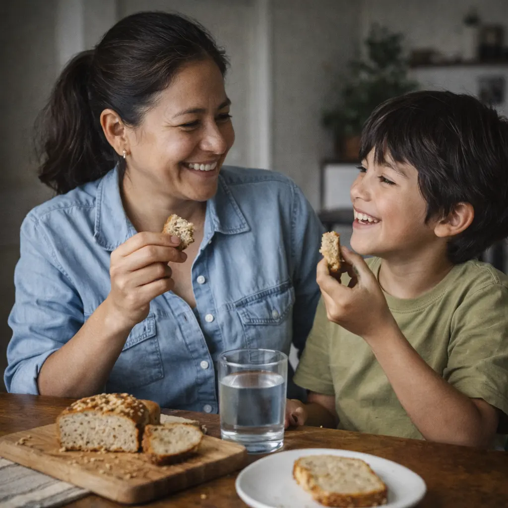
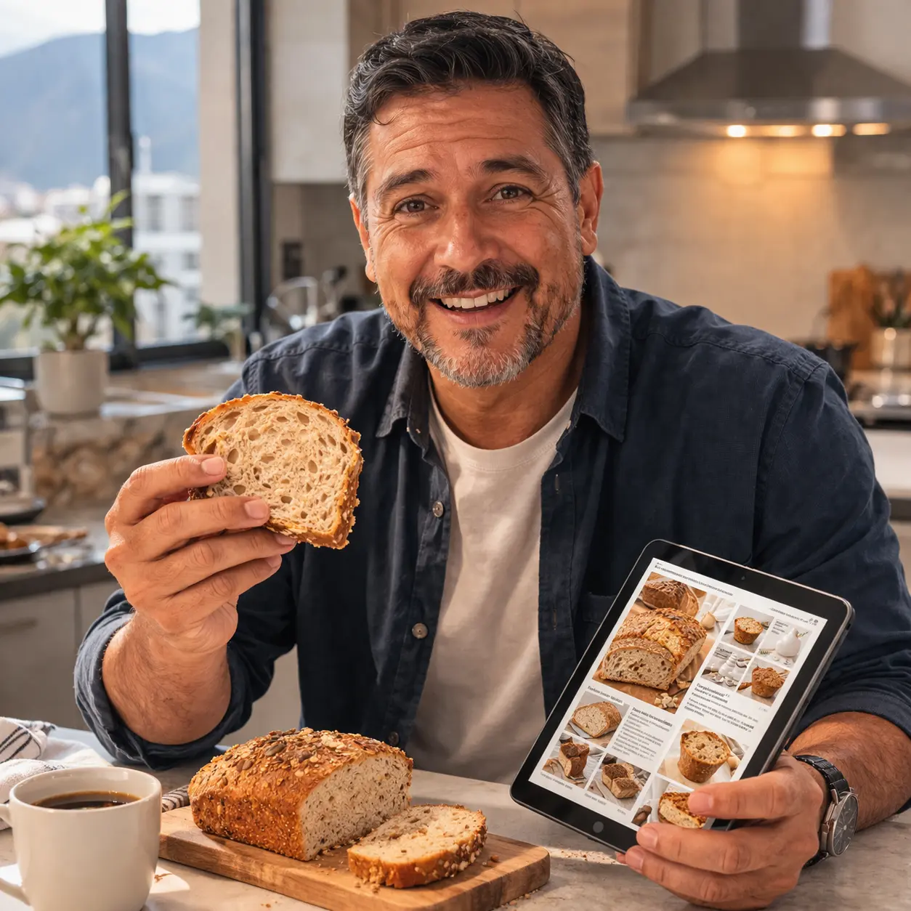
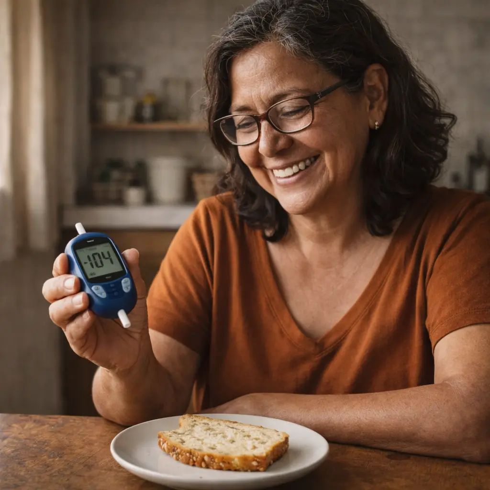
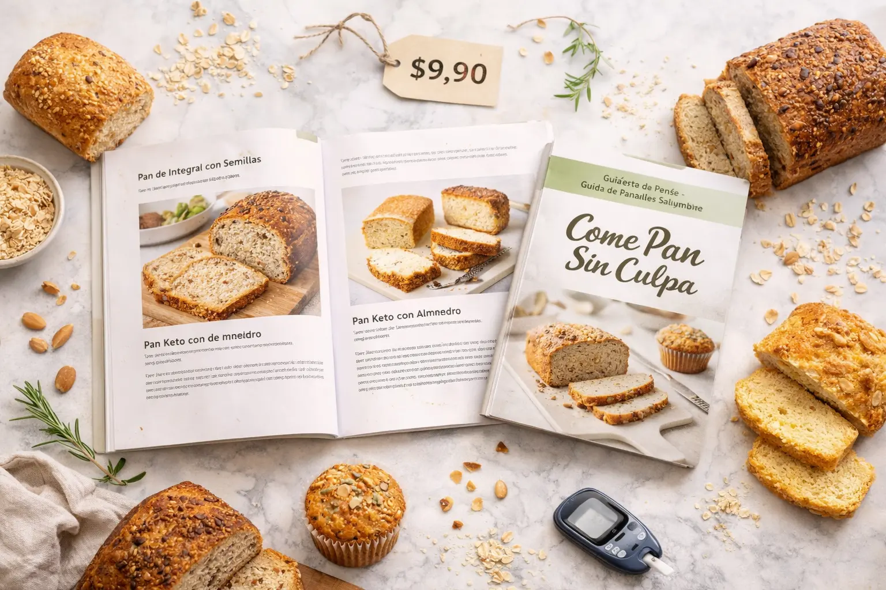

Descubre las 32 recetas de panes caseros que miles de personas con diabetes ya están haciendo en casa: sin gluten, sin azúcar refinada y sin lácteos, con ingredientes simples del supermercado de tu barrio.
Y desde ese día, cada mañana se convirtió en una pequeña batalla.
Ves el pan en la mesa. Lo hueles recién hecho. Y lo que sientes no es solo antojo… Es una mezcla de rabia, tristeza y resignación. Como si, de un día para otro, hubieran borrado algo que siempre fue parte de tu vida.
Quizás intentaste los panes "para diabéticos" que venden en el supermercado. Pero son carísimos, saben a cartón y — cuando lees el etiquetado — te das cuenta de que tampoco son tan saludables como dicen.

O buscaste recetas en internet. Pero entre tanta información contradictoria, no sabes en qué confiar ni qué combinación de ingredientes realmente funciona para tu glucosa.
Al final, terminas igual: Sin pan. Con hambre. Y con esa sensación incómoda de que cuidar tu salud significa sacrificar todo lo que te gusta.
Cuando vives en restricción constante, algo más profundo va pasando.
Comes con miedo. Cada bocado viene acompañado de culpa o de ansiedad por lo que van a decir los exámenes.
Rompes la dieta de golpe. Porque aguantar tanto tiempo sin nada que te guste termina en un "ya para qué" — y te comes lo que no deberías, sin control.
Te aíslas socialmente. Dejas de ir a desayunos familiares, a reuniones, porque no puedes comer lo que todos comen y eso te hace sentir diferente, marcado.
Gastas mal. Compras opciones industrializadas "fit" que son caras, con ingredientes cuestionables, y que igual no te satisfacen.
Y lo peor de todo: el estrés crónico que genera vivir así también afecta tu glucosa. Es un círculo que no termina.
Además, en América Latina la situación es alarmante:
Y aun así, nadie te enseña a cocinar diferente.
Solo te dicen lo que no puedes comer. Nunca te muestran lo que sí puedes — y cómo hacerlo.
Guía Completa de Panes Saludables para Diabéticos y toda la familia.
Un ebook 100% digital, con 32 recetas de panes caseros desarrolladas específicamente pensando en personas con diabetes, prediabetes, intolerancia al gluten, intolerancia a la lactosa — y para familias que quieren comer mejor sin perder el placer de la mesa.
No es teoría de nutrición. No es una lista de restricciones. Es comida real, para personas reales, con vidas reales en México, Argentina, Chile, Colombia y toda América Latina.


Porque fueron diseñadas considerando algo que la mayoría de las recetas "saludables" de internet ignora por completo: El índice glucémico de cada combinación de ingredientes.
No es lo mismo usar harina de trigo integral que harina de almendra.
No es lo mismo endulzar con azúcar morena que con eritritol o dátil.
No es lo mismo agregar avena procesada que avena en hojuelas sin procesar.
Cada decisión dentro de una receta afecta cómo tu cuerpo responde. Las recetas de Come Pan Sin Culpa fueron pensadas y ajustadas para usar harinas alternativas (almendra, yuca, maíz, quinoa) disponibles en toda LATAM, eliminar el azúcar y acortar tiempos de preparación.

"Hice el pan de almendra, lo comí con miedo y revisé mi glucómetro esperando lo peor. No subió como siempre. Tuve que medirme dos veces para creerlo. No sabes el alivio que sentí."

"Mi hijo tiene celiaquía y yo intolerancia a la lactosa. Encontrar algo que comiéramos juntos era imposible. Con esta guía, el pan volvió a la mesa de toda la familia."

"Compré pensando que por $9,90 no iba a recibir gran cosa. Me equivoqué completamente. La calidad del contenido vale fácilmente diez veces más."

"Le mostré las recetas a mi nutricionista antes de empezar. Me dijo que estaban perfectas. Ahora como pan todos los días y mis controles siguen bien."
Las instrucciones son paso a paso, escritas en lenguaje simple, como si alguien estuviera junto a ti en la cocina. No necesitas experiencia ni habilidades especiales.
No. Fueron elegidos específicamente para encontrarse en supermercados comunes de México, Argentina, Chile, Colombia y LATAM.
Las recetas fueron diseñadas considerando el índice glucémico de cada combinación. La base de la guía está construida exactamente para este perfil (monitorea siempre tu glucosa).
Puedes seguir comprándolo: caro, con ingredientes cuestionables y sabor mediocre. O aprender a hacerlo sabiendo exactamente qué consumes, con mejor sabor y por una fracción del costo.
La mayoría de las recetas está lista en menos de 30 minutos (algunas en menos de 15). Pensadas para personas con vidas muy ocupadas.
El precio bajo es una decisión estratégica para que la mayor cantidad de personas pueda acceder. El contenido no refleja el precio. Cuando lo veas por dentro, lo entenderás.
"5 Panes que Puedes Comer Todos los Días si Tienes Diabetes"
Un resumen práctico para los días en que no tienes tiempo de pensar: abres, eliges y listo.

Acceso inmediato · PDF · Garantía incondicional 7 días
QUIERO ACCEDER AHORA POR $9,90 →Descarga el material. Lee las recetas. Prueba las que quieras.
Si dentro de los primeros 7 días sientes que no fue lo que esperabas — por cualquier motivo que sea — te devolvemos el 100% de tu dinero.
Sin preguntas. Sin formularios complicados.
Tú no asumes ningún riesgo. El único riesgo aquí es nuestro.
Este precio es una oferta de lanzamiento.
No hay fecha exacta de cuándo va a cambiar — pero puede subir en cualquier momento cuando se alcance el límite de accesos. Si ves esta página, la ventana sigue abierta.
Por $9,90 USD hoy puedes dejar de vivir con miedo a la comida. Puedes volver a desayunar con tranquilidad y sentar a toda tu familia a la mesa sin culpa.
SÍ, QUIERO COMER PAN — ACCEDER POR $9,90 →El precio puede cambiar en cualquier momento.
1. Aceptación de los Términos
Al acceder o utilizar nuestro sitio web, productos ("Ebook Come Pan Sin Culpa") o servicios, usted acepta estar sujeto a estos Términos de Servicio. Si no está de acuerdo con todas las condiciones, por favor no utilice este sitio.
2. Uso del Contenido
Todo el contenido en este sitio, incluyendo pero no limitándose a recetas, guías, textos e imágenes, es propiedad de Come Pan Saludable LTDA. Está prohibida la reventa, distribución no autorizada o copia del producto digital adquirido. La licencia del material es para uso estrictamente personal.
3. Resultados y Descargo de Responsabilidad
Los resultados compartidos por terceros en testimonios no garantizan que todas las personas experimenten lo mismo. Los niveles de glucosa dependen de múltiples variables. Recomendamos medir siempre sus niveles antes y después de integrar alimentos nuevos.
4. Garantía de Devolución
Ofrecemos una garantía de satisfacción de 7 días. Las solicitudes de reembolso deben realizarse dentro de los 7 días naturales posteriores a la compra enviando un correo a soporte@comepansinculpa.com.
5. Modificaciones
Nos reservamos el derecho de modificar estos términos en cualquier momento. Su uso continuado del sitio tras los cambios implica la aceptación de estos.
En Come Pan Saludable LTDA nos tomamos la privacidad muy en serio. Esta política explica cómo recopilamos y usamos su información.
1. Identidad y domicilio del Responsable
Come Pan Saludable LTDA, con sede en Corporativo Reforma 222, CDMX, México, es el responsable del tratamiento de los datos personales que nos proporcione.
2. Datos que recopilamos
Recabamos únicamente la información necesaria para procesar la venta y entrega del producto digital: Nombre, correo electrónico y datos de pago (los cuales son cifrados y manejados a través de pasarelas seguras como Stripe o MercadoPago; nosotros no almacenamos números de tarjetas de crédito).
3. Finalidad del tratamiento
Sus datos se utilizarán exclusiva y estrictamente para facilitarle el acceso a la plataforma o envío del PDF, atender requerimientos de soporte técnico y, en caso de que lo acepte adicionalmente, enviar comunicaciones sobre promociones relacionadas de la misma temática.
4. Protección de Datos
Mantenemos estrictas medidas de seguridad administrativas y electrónicas para prevenir el acceso no autorizado, la alteración o el robo de sus datos.
5. Derechos ARCO
Usted tiene derecho a Acceder, Rectificar, Cancelar u Oponerse al uso de sus datos en cualquier momento enviando un email a nuestro soporte técnico con la solicitud.
Este sitio web utiliza cookies propias y de terceros para mejorar la experiencia del usuario y realizar métricas analíticas y publicitarias (como el Píxel de Meta).
1. ¿Qué son las cookies?
Las cookies son pequeños archivos de texto que se descargan en el dispositivo del usuario al visitar una página web. Permiten a la página recordar las preferencias de navegación y optimizar la experiencia.
2. Tipos de Cookies que utilizamos
- Estrictamente necesarias: Para que el sitio funcione correctamente (ej. recordar elementos del carrito).
- Analíticas (Google Analytics): Para comprender cómo los usuarios interactúan con nuestro sitio (
- Publicitarias (Píxel de Meta/Facebook): Nos permiten medir el comportamiento y ofrecer anuncios relevantes. Sujeto a las políticas de Meta Platforms Inc.
3. ¿Cómo deshabilitar las cookies?
Puede restringir, bloquear o borrar las cookies de nuestro sitio o cualquer otra página utilizando su navegador de internet. En cada navegador, la operativa es diferente; consulte la función "Ayuda" de su navegador específico (Chrome, Safari, Firefox, Edge).
Tenga en cuenta que deshabilitar cookies podría limitar ciertas funcionalidades o evitar que se procese la compra correctamente en el sitio.